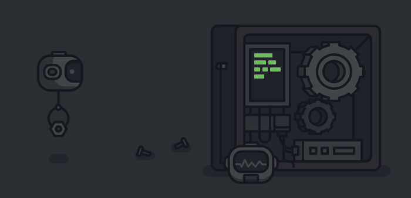

Even though I might be online on discord all the time, it is ONLY because my PC is on, and most prolly I'm [afk](https://www.grammarly.com/blog/afk-meaning/)
As Physics and Maths exams are approaching, in aug and sep respectively and then the Big Day, i.e CLAT exam on Dec 22, my schedule is kinda packed lul. So me kinda inactive on social media hehe
